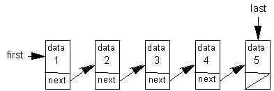

| | |
| L.A.30.1 - List1 | page 9 of 9 |
Background:
The student outline contains a program which stored a linked list of five nodes, but in reverse order. The objective of this lab exercise is to create a linked list with the nodes assembled in order as they are generated. If a loop is used to create the values 1-5, the resulting list should look like this:

The next value to be inserted would go at the right end of the list. To avoid traversing the entire list each time, two references will provide access at the front (first = left end) and the end (last = right end) of the list.
Your lab work can begin with the example program from listDemo.java.
An additional instance variable, last, should be added to the SinglyLinkedList class to supply direct access to the last node in the list. The constructor should also be modified to initialize the variable.
Create an addLast method to create and add a ListNode to the end of the list. The method will have to deal with several cases this time, an empty list case and a general case. A two case solution is required because the links are different for each case. The following code/pseudocode is provided:
void addLast(Object value)
// Takes in value, creates a new node, adds the new node
// at the end of the list.
{
if an empty list then
set both first and last to reference the newly constructed node
else
construct a new node at the end of the list
}
Add a getLast method to return the last element of the list.
Add a size method that returns a count of the number of nodes in the list
Adjust the code in the other routines as needed.
Assignment:
Using the guidelines in the Background section above, code a linked list which stores the 20 integers from 1-20 in ascending order.
After the list is created, call getLast display the contents of the last node to the screen.
Call printList to traverse the list and print out the 20 numbers in one line on the screen.
Use the size method to display the number of nodes in the list.
Instructions:
Turn in your source code and a printed run output.
The run output will consist of the value of the first node in the list, the value of the last node in the list, 20 numbers and a count of how many nodes are in the list. An example run output is shown below:
First Element: 1
Last Element: 20
SinglyLinkedList: 1 2 3 4 5 6 7 8 9 10 11 12 13 14 15 16 17 18 19 20
Nodes: 20
|